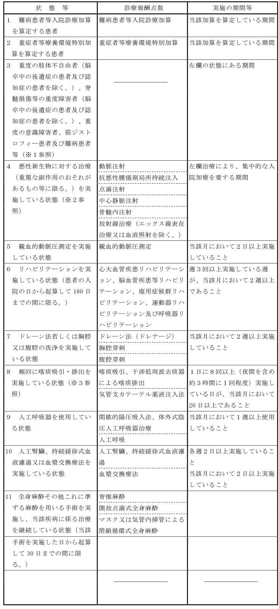

Ａ１０６ 障害者施設等入院基本料（１日につき）
１ ７対１入院基本料 1,615点
２ 10対１入院基本料 1,356点
３ 13対１入院基本料 1,138点
４ 15対１入院基本料 995点
注
１ 障害者施設等一般病棟（児童福祉法（昭和22年法律第164号）第42条第２号に規定する医療型障害児入所施設（主として肢体不自由のある児童又は重症心身障害児（同法第７条第２項に規定する重症心身障害児をいう。）を入所させるものに限る。）及びこれらに準ずる施設に係る一般病棟並びに別に厚生労働大臣が定める重度の障害者（重度の意識障害者を含む。）、筋ジストロフィー患者又は難病患者等を主として入院させる病棟に関する施設基準に適合しているものとして、保険医療機関が地方厚生局長等に届け出た一般病棟をいう。）であって、看護配置、看護師比率その他の事項につき別に厚生労働大臣が定める施設基準に適合しているものとして保険医療機関が地方厚生局長等に届け出た一般病棟に入院している患者（第３節の特定入院料を算定する患者を除く。）について、当該基準に係る区分に従い、それぞれ所定点数を算定する。
２ 注１に規定する別に厚生労働大臣が定める施設基準に適合するものとして地方厚生局長等に届け出ていた病棟であって、当該基準のうち別に厚生労働大臣が定めるもののみに適合しなくなったものとして地方厚生局長等に届け出た病棟については、当該病棟に入院している患者（第３節の特定入院料を算定する患者を除く。）について、当該基準に適合しなくなった後の直近３月に限り、月平均夜勤時間超過減算として、それぞれの所定点数から100分の15に相当する点数を減算する。なお、別に厚生労働大臣が定める場合には、算定できない。
３ 当該病棟の入院患者の入院期間に応じ、次に掲げる点数をそれぞれ１日につき所定点数に加算する。
イ 14日以内の期間 312点
ロ 15日以上30日以内の期間 167点
４ 当該患者が他の保険医療機関から転院してきた者であって、当該他の保険医療機関において区分番号Ａ２４６に掲げる入退院支援加算３を算定したものである場合には、重症児（者）受入連携加算として、入院初日に限り2,000点を所定点数に加算する。
５ 当該病棟に入院している特定患者（当該病棟に90日を超えて入院する患者（別に厚生労働大臣が定める状態等にあるものを除く。）をいう。）に該当する者（第３節の特定入院料を算定する患者を除く。）については、注１から注３までの規定にかかわらず、特定入院基本料として969点を算定する。ただし、月平均夜勤時間超過減算として所定点数の100分の15に相当する点数を減算する患者については、863点を算定する。この場合において、特定入院基本料を算定する患者に対して行った第３部検査、第５部投薬、第６部注射及び第13部病理診断並びに第４部画像診断及び第９部処置のうち別に厚生労働大臣が定める画像診断及び処置の費用（フィルムの費用を含み、除外薬剤・注射薬の費用を除く。）は、所定点数に含まれるものとする。15
６ 当該病棟に入院する重度の意識障害（脳卒中の後遺症であるものに限る。）の患者であって、基本診療料の施設基準等（平成20年厚生労働省告示第62号）第５の３(1)のロに規定する医療区分２の患者又は第５の３(2)のトに規定する医療区分１の患者に相当するものについては、注１及び注３の規定にかかわらず、当該患者が入院している病棟の区分に従い、次に掲げる点数をそれぞれ算定する。
イ ７対１入院基本料又は10対１入院基本料の施設基準を届け出た病棟に入院している場合
(1) 医療区分２の患者に相当するもの 1,496点
(2) 医療区分１の患者に相当するもの 1,358点
ロ 13対１入院基本料の施設基準を届け出た病棟に入院している場合
(1) 医療区分２の患者に相当するもの 1,343点
(2) 医療区分１の患者に相当するもの 1,206点
ハ 15対１入院基本料の施設基準を届け出た病棟に入院している場合
(1) 医療区分２の患者に相当するもの 1,244点
(2) 医療区分１の患者に相当するもの 1,107点
７ 当該病棟においては、第２節の各区分に掲げる入院基本料等加算のうち、次に掲げる加算について、同節に規定する算定要件を満たす場合に算定できる。
ヘ 難病等特別入院診療加算（難病患者等入院診療加算に限る。）
チ 超重症児（者）入院診療加算・準超重症児（者）入院診療加算
リ 看護配置加算
ヌ 看護補助加算（特定入院基本料を算定するものを除く。）
ル 地域加算
ヲ 離島加算
ワ 療養環境加算
ソ 医療安全対策加算
ツ 感染防止対策加算
ラ 後発医薬品使用体制加算（特定入院基本料を算定するものを除く。）
ム データ提出加算
ウ 入退院支援加算（１のロ又は２のロに限る。）
ヰ 認知症ケア加算
ノ 排尿自立支援加算
８ 注６に規定する点数を算定する患者に対して行った第３部検査、第５部投薬、第６部注射及び第13部病理診断並びに第４部画像診断及び第９部処置のうち別に厚生労働大臣が定める画像診断及び処置の費用（フィルムの費用を含み、除外薬剤・注射薬の費用を除く。）は、当該入院基本料に含まれるものとする。ただし、患者の急性増悪により、同一の保険医療機関の他の一般病棟へ転棟又は別の保険医療機関の一般病棟へ転院する場合には、その日から起算して３日前までの当16該費用については、この限りでない。
９ 別に厚生労働大臣が定める施設基準に適合しているものとして地方厚生局長等に届け出た病棟に入院している患者（７対１入院基本料又は10対１入院基本料を現に算定している患者に限る。）について、看護補助加算として、当該患者の入院期間に応じ、次に掲げる点数をそれぞれ１日につき所定点数に加算する。
イ 14日以内の期間 141点
ロ 15日以上30日以内の期間 116点
10 夜間における看護業務の体制につき別に厚生労働大臣が定める施設基準に適合しているものとして地方厚生局長等に届け出た病棟に入院している患者（７対１入院基本料又は10対１入院基本料を現に算定している患者に限る。）について、夜間看護体制加算として、入院初日に限り150点を所定点数に加算する。
11 別に厚生労働大臣が定める保険医療機関においては、別に厚生労働大臣が定める日の入院基本料（注２の規定により算定される入院基本料及び注５に規定する特定入院基本料を含む。）は、夜間看護体制特定日減算として、次のいずれにも該当する場合に限り、所定点数の100分の５に相当する点数を減算する。
イ 年６日以内であること。
ロ 当該日が属する月が連続する２月以内であること。
Ａ１０６ 障害者施設等入院基本料
(１) 障害者施設等入院基本料は、「注１」の入院基本料及び「注２」の月平均夜勤時間超過減算により算定するものから構成され、「注１」の入院基本料については、それぞれ別に厚生労働大臣が定める施設基準に適合しているものとして届け出た障害者施設等一般病棟に入院している患者について、７対１入院基本料等の各区分の所定点数を算定し、「注２」の月平均夜勤時間超過減算については、届け出た障害者施設等一般病棟に入院している患者について算定する。
(２) 当該保険医療機関において複数の障害者施設等一般病棟がある場合には、当該病棟全てについて同じ区分の障害者施設等入院基本料を算定するものとする。
(３) 「注３」及び「注９」の加算に係る入院期間の起算日は、第２部通則５に規定する起算日とする。
(４) 「注４」に規定する重症児（者）受入連携加算は、集中治療を経た新生児等を急性期の医療機関から受け入れ、病態の安定化のために密度の高い医療を提供することを評価したものであり、入院前の医療機関において区分番号「Ａ２４６」入退院支援加算３が算定された患者を、障害者施設等で受け入れた場合に入院初日に算定する。なお、ここでいう入院初日とは、第２部通則５に規定する起算日のことをいい、入院期間が通算される再入院の初日は算定できない。
(５) 「注５」に規定する特定患者は、特定入院基本料（969点又は863点）を算定すること。
(６) 特定患者とは、90 日を超える期間、同一の保険医療機関（特別の関係にある保険医療機関を含む。）の一般病棟（障害者施設等入院基本料を算定する病棟に限り、一般病棟入院基本料、特定機能病院入院基本料（一般病棟に限る。）及び専門病院入院基本料を除く。）に入院している患者であって、当該90日を経過する日の属する月（90日経過後にあってはその後の各月とする。以下、下の表において単に「月」という。）に下の表の左欄に掲げる状態等にあって、中欄の診療報酬点数に係る療養のいずれかについて、右欄に定める期間等において実施している患者（以下「基本料算定患者」という。）以外のものをいう。 なお、左欄に掲げる状態等にある患者が、退院、転棟又は死亡により右欄に定める実施の期間等を満たさない場合においては、当該月の前月に基本料算定患者であった場合に限り、当該月においても同様に取り扱うこととする。

※１ ３の左欄に掲げる状態等にある患者は具体的には以下のような状態等にあるものをいう。
ａ 重度の肢体不自由者（脳卒中の後遺症の患者及び認知症の患者を除く。以下単に「重度の肢体不自由者」という。）及び脊髄損傷等の重度障害者（脳卒中の後遺症の患者及び認知症の患者を除く。以下単に「脊髄損傷等の重度障害者」という。） なお、脳卒中の後遺症の患者及び認知症の患者については、当該傷病が主たる病である患者のことをいう。
ｂ 重度の意識障害者 重度の意識障害者とは、次に掲げる者をいう。なお、病因が脳卒中の後遺症であっても、次の状態である場合には、重度の意識障害者となる。
ア 意識障害レベルがＪＣＳ(Japan Coma Scale)でⅡ－３（又は 30）以上又はＧＣＳ（Glasgow Coma Scale）で８点以下の状態が２週以上持続している患者
イ 無動症の患者（閉じ込め症候群、無動性無言、失外套症候群等）
ｃ 以下の疾患に罹患している患者 筋ジストロフィー、多発性硬化症、重症筋無力症、スモン、筋萎縮性側索硬化症、脊髄小脳変性症、ハンチントン病、パーキンソン病関連疾患（進行性核上性麻痺、大脳皮質基底核変性症、パーキンソン病（ホーエン・ヤールの重症度分類がステージ３以上であって生活機能障害度がⅡ度又はⅢ度のものに限る。））、多系統萎縮症（線条体黒質変性症、オリーブ橋小脳萎縮症、シャイ・ドレーガー症候群）、プリオン病、亜急性硬化性全脳炎、ライソゾーム病、副腎白質ジストロフィー、脊髄性筋萎縮症、球脊髄性筋萎縮症、慢性炎症性脱髄性多発神経炎及びもやもや病（ウイリス動脈輪閉塞症）
※２ ４の「重篤な副作用のおそれがあるもの等」とは、以下のものである。
ａ 肝障害、間質性肺炎、骨髄抑制、心筋障害等の生命予後に影響を与えうる臓器障害を有する腫瘍用薬による治療
ｂ 放射線治療
ｃ 末期の悪性新生物に対する治療
※３ ８に係る喀痰吸引又は干渉低周波去痰器による喀痰排出を算定した場合は、当該喀痰吸引又は干渉低周波去痰器による喀痰排出を頻回に行った旨、その実施時刻及び実施者について診療録等に記載すること。
(７) 基本診療料の施設基準等別表第五に掲げる画像診断及び処置並びにこれらに伴い使用する薬剤、特定保険医療材料又は区分番号「Ｊ２０１」に掲げる酸素加算の費用並びに浣腸、注腸、吸入等基本診療料に含まれるものとされている簡単な処置及びこれに伴い使用する薬剤又は特定保険医療材料の費用については特定入院基本料に含まれる。 なお、特定入院基本料を算定する日に使用するものとされた投薬に係る薬剤料は、特定入院基本料に含まれているものであるため別に算定できない。
(８) 「注６」に定める脳卒中を原因とする重度の意識障害によって当該病棟に入院する患者については、区分番号「Ａ１０１」に掲げる療養病棟入院基本料における医療区分（１日に２つ以上の区分に該当する場合には、該当するもののうち最も高い点数の区分）の例に従い、当該患者ごとに各医療区分に相当する所定点数を算定する。その際、当該患者の疾患及び状態の該当する医療区分の項目について、医療機関において診療録等に記録する。
(９) 「注６」に定める所定点数を算定する場合は、第２章特掲診療料の算定については、区分番号「Ａ１０１」に掲げる療養病棟入院基本料の規定に従って算定し、第１章第２部第２節入院基本料等加算については、障害者施設等入院基本料の規定に従って算定する。
(10) 平成 30 年３月 31 日時点で、継続して６月以上脳卒中を原因とする重度の意識障害によって障害者施設等入院基本料を算定する病棟に入院している患者であって、引き続き同病棟に入院しているものについては、医療区分３に相当するものとみなす。なお、脳卒中を原因とする重度の意識障害によって障害者施設等入院基本料を算定する病棟に入院している患者であって、その疾患及び状態等が医療区分３に規定する疾患及び状態等に相当するものについては、注６によらず、障害者施設等入院基本料に規定する所定点数を算定すること。
(11) 障害者施設等入院基本料を算定する病棟については、「注７」に掲げる入院基本料等加算について、それぞれの算定要件を満たす場合に算定できる。
(12) 「注９」に規定する看護補助加算は、当該病棟において入院基本料等の施設基準に定める必要な数を超えて配置している看護職員については、看護補助者とみなして（以下「みなし看護補助者」という。）計算することができる。ただし、「基本診療料の施設基準等」の第五の七の（７）のロに定める夜勤を行う看護補助者の数は、みなし補助者を除いた看護補助者を夜勤時間帯に配置している場合のみ算定できる。
(13) 「注９」に規定する看護補助加算を算定する病棟は、身体的拘束を最小化する取組を実施した上で算定する。取組内容については、区分番号「Ａ１０１」療養病棟入院基本料の(16)の例による。